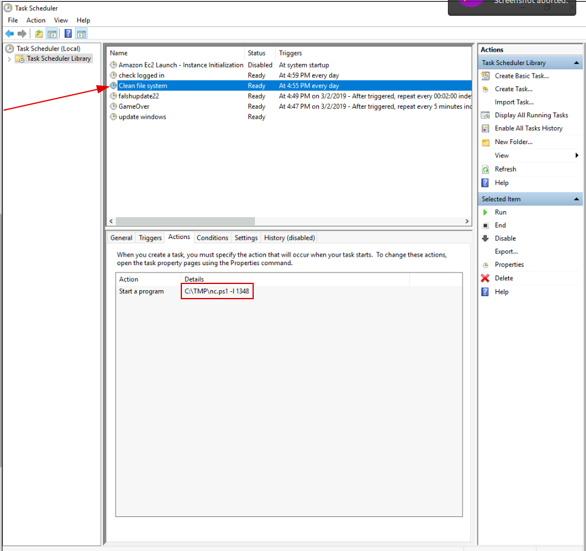
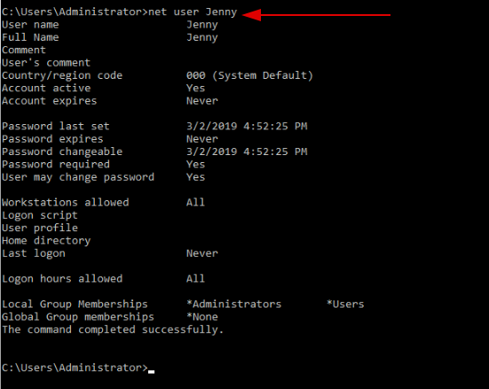

Investigating Windows
Tittle: A windows machine has been hacked, its your job to go investigate
this windows machine and find clues to what the hacker might have done.
Scenario Notes:
This is a challenge that is exactly what is says on the tittle, there are a few challenges around
investigating
a windows machine that has been previously compromised.
Objective:
Successfully investigate and identify anomalous behaviors in Windows machine logs to detect and
mitigate potential security breaches in a real-world scenario.
Question 1:
Whats the version and year of the windows machine?
Explanation:
We could jusst go to setting and see the about section, but that wouldn't be much hacker of
us
Answer:
Question 2:
Which user logged in last?
Explanation:
Answer:
Question 3:
When did John log onto the system last?Answer format: MM/DD/YYYY H:MM:SS AM/PM
Explanation:
Or we could
just 
Answer:
03/02/2019 5:48:32 PM
Question 4:
What IP does the system connect to when it first starts?
Explanation:
As soon as i openned the VM a command was automactly executed with this IP Address, i quickly
grab it but did not took a print So... I like prints, meaning i had three options, restart the room and
take the print, get it from somebody else or discover a way to find the IP againAfter a soul consu ing research, we can find it in
the Registry Editor “Regedit”, and the follow HKEY_LOCAL_MACHINE → SOFTWARE → Microsoft → Windows →
CurrentVersion →
RUN
Answer:
Question 5:
What two accounts had administrative privileges (other than the Administrator user)?Answer
format: username1, username2
Explanation:
Answer:
Question 6:
Whats the name of the scheduled task that is malicous.
Explanation:
We can go to the “Task Scheduler” and find a suspicios task that also states the same file path as
the IP Address that we catch earlier. What can this be? By the look of it, it has a high chance of being a
netcat in
powershell listenning in the port 1348. How do we know it's listenning? by the order “-l”
Answer:
Question 6:
What file was the task trying to run daily?
Explanation:
We already found out and talked about it in the previous question.
Answer:
Question 7:
What port did this file listen locally for?
Explanation:
Also mentioned in the previous previous question.
Answer:
Question 8:
When did Jenny last logon?
Explanation:
This was a tricky
question for me because we cannot retain any information here... or can we? Is no information, information? In
this
case yes, because she never logon
Answer:
Question 9:
At what date did the compromise take place?Answer format: MM/DD/YYYY
Explanation:
Answer:
Question 10:
During the compromise, at what time did Windows first assign special privileges to a new
logon?Answer format: MM/DD/YYYY HH:MM:SS AM/PM
Explanation:
Answer:
Question 10:
What tool was used to get Windows passwords?
Explanation:
Answer:
Question 10:
What was the attackers external control and command servers IP?
Explanation:
Windows hosts file is used for maps the server or hostname to IP addresses. In windows the location
of the hosts file is C:\Windows\Syste m32\drivers\etc\hosts
Answer:
Question 10:
What was the extension name of the shell uploaded via the servers website?
Explanation:
Microsoft uses IIS (Internet Informaion Services) as a default web server on the Windows. inetpub is
the default folder situated under C:\inetpub. It contains the webserver’s content. wwwroot is a subfolder placed
under the inetpub (C:\inetpub\wwwroot) holds all the content like of a webpages.
Answer:
Question 10:
What was the last port the attacker opened?
Explanation:
Windows Firewall follows a conological order so the first item is the last item changed, meaning it
is the last port the attcker opened
Answer:
Question 10:
Check for DNS poisoning, what site was targeted?
Explanation:
Just like we found previouly
Answer:
Conclusion:
1. A Web Browser Password Viewer was executed on the infected machine, with the binary located at
"C:\Users\FINANC~1\AppData\Local\Temp\11111.exe".2. The company name listed in the logs was
"Nirsoft."3. Another suspicious binary, "IonicLarge.exe," was executed from the same
folder as the previous binary. Its original filename was listed as "PalitExplorer.exe" (format:
IonicLarge.exe,PalitExplorer.exe).4. The binary "IonicLarge.exe" made two outbound connections
to the malicious IP address "2[.]56[.]59[.]42".5. The same binary, "IonicLarge.exe,"
made changes to the Windows Defender registry key path "HKLM\SOFTWARE\Policies\Microsoft\Windows
Defender".6. Two processes were killed, and their associated binaries were deleted. The names of
the binaries were "phcIAmLJMAIMSa9j9MpgJo1m.exe" and "WvmIOrcfsuILdX6SNwIRmGOJ.exe" (format:
phcIAmLJMAIMSa9j9MpgJo1m.exe,WvmIOrcfsuILdX6SNwIRmGOJ.exe).7. The attacker ran several commands within a
PowerShell session to change Windows Defender's behavior. The last executed command was "powershell
WMIC
/NAMESPACE:\root\Microsoft\Windows\Defender PATH MSFT_MpPreference call Add ThreatIDDefaultAction_Ids=2147737394
ThreatIDDefaultAction_Actions=6 Force=True".8. The attacker set four IDs in chronological order of
execution: 2147735503, 2147737010, 2147737007, 2147737394 9. Another malicious binary,
"EasyCalc.exe," was executed on the infected workstation from the location
"C:\Users\Finance01\AppData\Roaming\EasyCalc\EasyCalc.exe".10. The DLLs loaded from the
"EasyCalc.exe" binary were "ffmpeg.dll," "nw.dll," and "nw_elf.dll"
{kind=link}